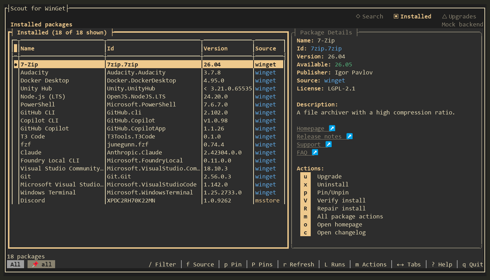

SCOUT FOR WINGET / DOCUMENTATION
Make yourself at home.
Install Scout, learn its daily workflow, and find the right package with confidence.
01 / INSTALL
Install Scout
Scout runs on Windows 10 or 11 with WinGet available through App Installer. Windows Terminal is recommended. Choose the portable ZIP that matches your PC:
- Extract the complete ZIP to a folder you will keep, such as
%LOCALAPPDATA%\Programs\WinGetScout. - Open Windows Terminal or PowerShell in that folder.
- Run
.\wingetscout.exe.
The community WinGet package ID is Harder.WinGetScout. Its community submission is under review. Once accepted and indexed, winget install -e --id Harder.WinGetScout will place the portable package in WinGet's managed directory and add its command to your user PATH. The package is not yet available in the community source.
Downloads are currently unsigned. Check the release's SHA256SUMS file before running a download. See the signing status and plan.
02 / DAILY WORKFLOW
Find your way around
Scout opens on Installed packages. Use the left and right arrow keys or 1/2/3 to switch between Search, Installed, and Upgrades. The package list and detail panel stay side by side, so you can compare results without retyping a package ID.
The left marker uses ✓ for selected packages, ◆ for the current selected row, and ● for the current unselected row. Details puts descriptions first and uses compact link labels. Open Actions with m and choose More links… for keyboard access to support, privacy, purchase, and documentation links.

Installed view · Amber theme · v1.1.1 · sample data- Search for a package with
/and move through the results. Publisher, source, versions, links, and description appear beside the list. - Press
ito install the highlighted result, or mark several withSpaceand pressiorBto review the entire selection. - In Upgrades, mark packages and press
uorUto review a batch. - Approve the explicit Install (N) or Upgrade (N) button after checking the plan. Open
Lafterward for outcomes, diagnostics, and reviewed retries.
Press m or Shift+F10, or right-click a row, for actions that match the tab, selection, backend, and pin state. Menus put the selected plan first and offer a separate highlighted-package action. Use ? for help; arrow and page keys scroll it.
The search demo and batch-review demo show the 1.1.1 UI with sample packages. Both cancel their plans without installing anything.


03 / SELECT AND REVIEW
Run a batch with a clear scope
- Mark packages with
Space.atoggles all visible rows. - Read the heading's visible/total and selected/hidden counts. Filtering, changing sources, or searching again can hide marks without clearing them.
- Use
i/Bin Search oru/Uin Upgrades. The review includes hidden selections, with visible packages in their current sort order first. - Inspect ready/skipped reasons. Enter or double-click opens Details; use Tab to reach Install (N) or Upgrade (N) and approve the ready packages.
- Watch the dedicated status row for package position and backend progress. The list refreshes as soon as the batch finishes, while results are open. Successful packages are deselected; failed or cancelled ones stay marked.
Escape first cancels the current input or pending check/operation. Otherwise it clears all marks, including hidden packages; Clear selection in Actions does the same. Changing tabs or sources, refreshing, or cancelling a pending check discards it so a late response cannot open a stale review.
Compact tables prioritize names and versions. Full IDs and sources remain in Details; wider windows restore their columns. The title shows the active sort field and arrow even if that column is hidden. Sorting, theme changes, and pin filters keep the highlighted package when it remains visible.
04 / OUTCOMES AND RETRIES
Understand a run. Review what comes next.
Press L for the 20 most recent operation runs. Open a run and choose Details, or press Enter on a package, for timing, source, versions, requested options, backend, CLI exit codes, and diagnostic output. Reports retain up to 16,384 characters of diagnostic output per package.
Retry package uses the highlighted result. Retry unfinished (N) rechecks retryable failed, cancelled, and skipped requests, including packages not started in an interrupted batch. Successful packages are not repeated by Retry unfinished. Scout resolves each original ID/source and rechecks relevant installed state, versions, and pins before showing a fresh review.
05 / DIAGNOSE AND SHARE
Backend, source, and package reports
Press D, or choose Backend and source diagnostics in Actions, to inspect the active backend/version, process architecture, capabilities, recorded COM fallback reason, source filter, and latest inventory-load error. The shortcut also works during a foreground workflow.
Read-only checks query each configured source for Microsoft.PowerToys. Empty successful queries are distinguished from failed queries or source discovery. Refresh repeats the checks; closing the panel cancels pending work.
Use Copy, Save text, or Save JSON for a completed backend report or a package's run diagnostic report. Choose a destination and confirm before replacing an existing file. Cancelling or failing a save preserves the original file; a clipboard failure leaves the viewer open so you can save instead. Arrow keys, PageUp/PageDown, Home/End, and scrollbars navigate reports.
06 / INSTALL OPTIONS
Know which settings you are requesting
Press A for advanced installation. Scope, mode, architecture, and custom installer arguments explain defaults versus explicit overrides. COM defaults to Silent; CLI leaves its default mode to WinGet.
Review fetches an installer preview before final confirmation and does not install anything. Confirmation separates the requested options from the selected installer. A known scope or architecture conflict blocks execution so you can change the setting; when no preview is available, Scout says WinGet will resolve the options during execution.
I selects a specific version when versions are available, or accepts manual entry otherwise. Blank entries show inline guidance. d downloads an installer without installing it. These actions keep their confirmation or review step.
07 / SHORTCUTS
Keyboard shortcuts
Moving beyond either end of the list keeps focus there, including when it is empty. The footer keeps status and progress above the available shortcuts, with selection-aware install/upgrade hints. Press ? for the full in-app reference.
08 / THEMES
Choose a palette
Press t to switch between Sage, Amber, Moss & Olive, and Dusty Rose without leaving Scout. You can also start with --theme=sage, --theme=amber, --theme=moss, or --theme=rose. See all four theme screenshots, captured with demo packages.
09 / STAY CURRENT
Scheduled update checks
On the Upgrades tab, press C to check now or set a daily local time. Scout creates a current-user Windows Task Scheduler task. The first successful check establishes a baseline; later checks can notify you about new or changed unpinned upgrades or a failed check.
Scout keeps package sets, recent runs, update-check results, and schedule settings under %LOCALAPPDATA%\WinGetScout. Mock sessions use its Mock subfolder, support manual checks, and cannot register, change, or remove daily tasks.
10 / UNDER THE HOOD
Backends and capabilities
The complete portable ZIP uses the structured WinGet COM API where it can activate. If COM is unavailable, Scout falls back to the winget CLI and shows the active backend in its header. The standalone EXE download uses the CLI because it lacks the COM companion files.
Both backends support core search, install, upgrade, uninstall, pins, saved sets, history, and scheduled checks. COM can provide richer details, installer previews, version lists, live progress, and supported verify or repair actions. Some information depends on what the active backend exposes.
Native ARM64 COM installs have an unresolved known limitation. Use wingetscout.exe --cli for affected operations. Architecture overrides are checked against read-only previews, which do not validate an actual install.
11 / HELP
Troubleshooting
WinGet is missing
Run winget --version. If the command is unavailable, install or update Microsoft App Installer, then open a new terminal.
Windows warns about an unsigned download
Confirm the file came from the project's GitHub Release and compare its SHA-256 hash with the matching SHA256SUMS file. See the signing guide for the current status.
COM is unavailable
Make sure you extracted the whole ZIP, then check the active backend shown in Scout. CLI fallback still supports the core workflows. See backend and activation details.
A batch only partly completed
Open its results in L, inspect package diagnostics, and choose Retry unfinished (N) to recheck retryable requests. Review the new plan before approving.
Selected packages seem to be missing
Check the hidden-selection count. Filters, source changes, or earlier searches can hide marks. Review the full selection or use Clear selection in Actions.
A list or source query failed
Open D for backend/source checks and copy or save the completed report. For a package operation failure, export that package's diagnostic report from L.
Text looks different in another terminal
Windows Terminal is recommended. Terminal palette and color-support settings affect rendering; NO_COLOR or TERM=dumb in the launching environment can reduce the palette. Try another theme with t and include your terminal host when reporting a display issue.
How do I get help or report a bug?
Press ? in Scout or open a GitHub issue.
12 / MORE
More resources
Read the README, usage guide, architecture guide, release history, and 1.1.1 release notes.
Scout was inspired by Scott Hanselman's winget-tui and is built with Terminal.Gui. It is an independent MIT-licensed project. Meet Kevin and the other tools behind Scout.